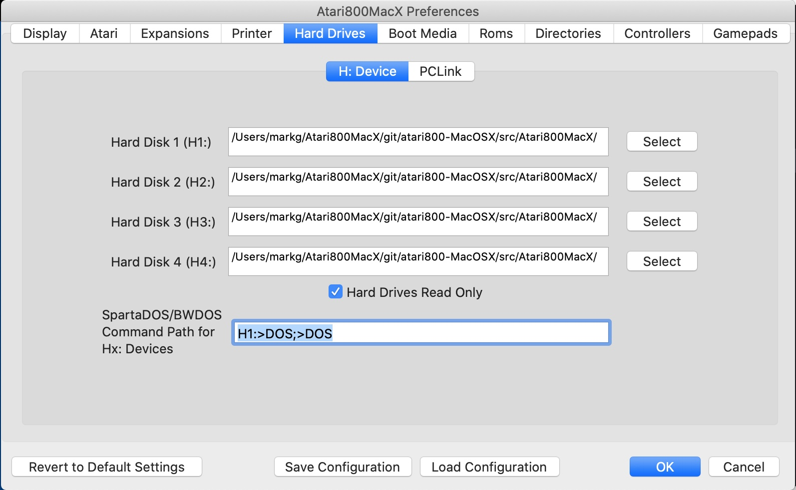
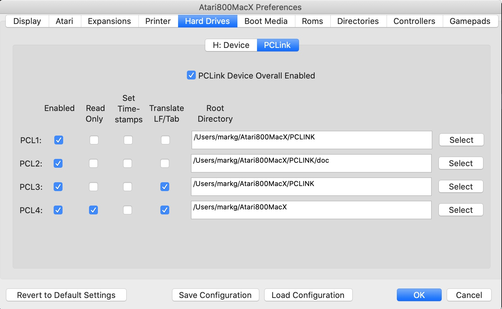

|
Atari800MacX Help
Preferences Window
Hard Drives Tab
|
This tab has two sub-tabs. The first, H: Device, controls the traditional
H: Device used in most Atari 800 emulators. The second, PCLink, is a new
device supported by Sio2bsd and the Alitrra emulator, as well as now
Atari800MacX that allows access to the host file system using SpartaDOSX,
as the H: device is not supported by Sparta.
H: Device subtab
This sub-tab allows you to set the directories used by the emulator for the
Hard Disk Device Emulator, H: , and for the newly added (version 4.0
and later) D: patch emulator, which uses some of the same directories
used for H:.

There are four directories, and they
are mapped to devices as follows:
- H0: – program directory, no conversion
- H1: - H4: – directories #1-#4, no conversion
- H5: – program directory, text conversion
applied
- H6: - H9: – directories #1-#4, text conversion
applied
The D: patch uses D6-D9 as Hard Disk drives, which use the same
directories as some of the H: devices. The mapping is as follows:
- D6 - directory #1, no conversion
- D7 - directory #2, no conversion
- D8 - directory #1, text conversion applied
- D9 - directory #2, text conversion applied
You use the checkbox at the bottom of the tab to make the H: devices
read only, as opposed to read/write. D: devices are also made read only using the same checkbox.
The
new D: patch has the advantage that it works in many programs that will
not support H:, but only recognize D: devices, such as Action!.
It is also fully compatible with MyDos, including the default
directory which can be accessed as D:. The patch is dynamic, and
reinstalls itself whenever the DOS overwrites it. It does require
a DOS, however, and will not work without a DOS as H: will.
Starting in version 1.1, Atari800MacX supports all normal DOS functions
for the hard drives, including Rename, Delete, Note, Point, and Open
for
modify (read/write). One caveat is that all file names created
from
the Mac side should be lower case.
Starting in version 1.2, Atari800MacX supports subdirectories on the
hard drives.
Note, the Delete function will not work on Hard Drives from the Atari
DOS 2.x or MYDOS menus, as they do not recognize Hx: as a drive.
However, the XIO functions will work to delete.
All file and Directory functions are supported by SpartaDos or BWDos
from
the command line, as well as from their XIO equivalents. Binary
Load
(with all options) will also work with MYDOS and its XIO equivelents.
Also, there is a capability to specify a Command Path for use with
SpartaDos
and BW-DOS when issuing command from the Hx: prompt. The normal
path
used with Dx: drives will not work, as this is part of the driver for
the
Dx: devices in the DOS. The paths specified here are separated by
semicolons,
and may include the normal directory seperator character ('>'').
The
path defaults to "H1:>DOS;>DOS". This means that the "DOS"
directory
on Hard Drive 1 will be searched for the command, then the "DOS"
directory
on the current drive, then finally the current directory will be
searched.
PCLink subtab
This sub-tab allows you to configure the PCLink device.
A PCLink device is a device on the serial I/O (SIO) bus that
responds to file and directory I/O commands, typically a modern computer
connected over an SIO2PC style adapter and running a PCLink server program.
Unlike traditional disk emulation solutions, PCLink works directly at the
file I/O layer level, avoiding the limitations of disk
emulation and allowing full write access. In Atari800MacX's case, the server
program is integrated into the emulator itself, making it even easier to set
up.

PCLink Options
PCLink Overall Device Enable
This is the master on/off switch for PCLink. It is analagous to plugging
or unplugging the PCLink device from the SIO Bus.
PCLink Individual Device Enable
These four checkboxes control if that particular PCLx: device responds to
commands from the Atari.
PCLink Individual Device ReadOnly
These four checkboxes control if that particular PCLx: device allows
write and delete commands from the Atari.
PCLink Individual Device Set Timestamps
These four checkboxes control if that particular PCLx: device uses
timestamps that are passed from the Atari in the PCLink control block
when updating files on the host.
PCLink Individual Device Translate LF/Tab
These four checkboxes control if that particular PCLx: device does
translation of Atari and Host Line Feed and Tab characters. If enabled,
upon reads from the host device Host Tabs and Line Feeds will be translated
to their Atari equivelents. On write, the reverse will happen. Note, you
do not want to enable this on drives where you will be loading or saving
binary files. It is allowable to point to of the PCLx: devices to the same
base directory, so that you can use one for binary files and one for text
files. This allows for using Host editors with Atari
compilers/interpreters.
PCLink Usage
Accessing PCLink through CIO
Accessing the PCLink device requires special OS support; it cannot be accessed through CIO.
This means that neither BASIC nor Atari DOS can normally access PCLink, and for those the H: device should
be used instead.
Accessing PCLink with SpartaDOS X
To access the PCLink device with SpartaDOS X, you must be using at least version 4.43 and have the PCLINK.SYS
device from the Toolkit disk.
Loading PCLINK.SYS
The PCLINK.SYS driver can be executed directly or loaded via a DEVICE PCLINK.SYS statement in
CONFIG.SYS. When it loads, it should display a message like this:
D1:PCLINK.SYS
PCLink v0.3, dev. 6, SIO id $6F
D1:
The /S flag can also be specified to the PCLINK.SYS driver to use the OS SIO routine instead of SpartaDOS X's
SIO routine. This allows the SIO Patch option to work and permits much faster transfers.
Accessing files through PCLink
Once loaded, the PCLINK.SYS device exports a PCL: device to SpartaDOS X. Files can be copied from and to the
device, and programs can be loaded from it.
Host file mapping
Since filenames are more restricted in Atari operating systems than on modern OSes, the filenames
on the host must be mapped using more restricted rules. Whenever possible, files are mapped directly,
but there are some limitations on the mapping:
- Files that are 16MB (16,777,216 bytes) or larger cannot be seen or accessed.
- Files whose names do not fit an 8.3 pattern or use characters other than A-Z, 0-9, or _ are inaccessible.
- Filename mangling is used to avoid collisions with reserved DOS device names, such as LPT1 or COM1. These filenames
are prefixed with ! on the host, i.e. !COM1.
SIO protocol
The PCLink device is accessed through SIO device $6F, using the DOS2DOS
protocol. Unlike
a disk image, this protocol exposes the host filesystem using a file and
handle based paradigm instead as raw blocks.
While documenting the whole protocol is beyond the scope of this help, here
is a summary:
- Three main SIO commands are supported: Put ($50), Read ($52), Status ($53).
- The Put command is used to send command parameters.
- The Read command is used to exchange command data or responses.
- The Status command retrieves error codes and buffer sizes.
- Supported function codes include:
- init
- read
- write
- seek
- get file position
- open file
- close handle
- get file length
- find first file/directory
- find next file/directory
- change attributes
- create directory
- remove directory
- change current directory
- get current directory
- get disk info
When the SIO patch is enabled, Atari800MacX accelerates PCLink requests issued through the SIOV vector.